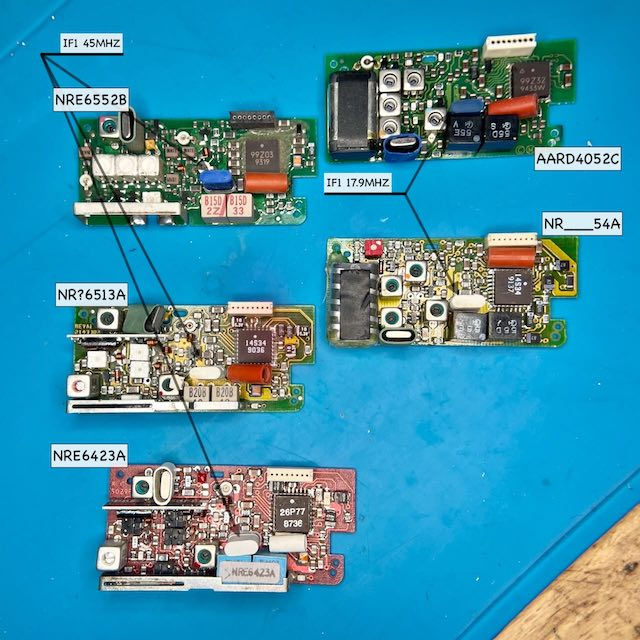

Motorola POCSAG Pager
RF boards

UHF and VHF receiver boards.
Here is the compiled list of known part numbers. Some of it can be decoded using aaannnn and suffix tables:
- AA or N means country of origin, could be "Made in the USA" and "Portable product (i.e. Florida manufacturing plants)"
- R "Receivers and receiver related"
- D/E 144-174 MHz or 406-470 MHz
AARD4050 138-143 x2 AARD4051 143-148.6 x2 AARD4051A 143-148.9 x2 62.55-65.35 AARD4052 148.6-152 x3 AARD4053 152-159 x3 AARD4054 159-164 AARD4055 164-169 AARD4056B/D 169-172 AARD4056A 169-174 NRE6550B 406-423 x8 NRE6551B 435-450 x8 48.75-50.625 NRE6552B 450-465 NRE6553B 465-480 NRE6555B 495-512
For re-crystalling, VHF manual calls for a KXN6300AA (167651, 167652), and UHF manual calls for a KXN6301AA Ther also KXN6236AA (167647, 167648) in ICM catalogue. It's AT cut, third overtone, are used in a series resonant circuit, have about 5 picofarads (pf) of capacitance, and have about 25 ohms of resistance. Case: UM-1/4/5.
DAPNet
VHF: TBC, as not available in the UK
UHF: 49.3734375MHz, calculated as (439.9875 - 45)/8, within 455kHz/2 PN KXN6236AA (167648).
{kind=link}
{kind=link}